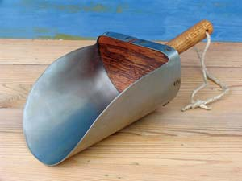
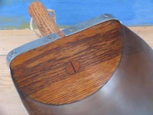
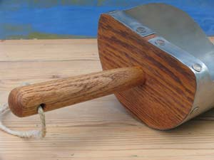

Country Lore: Make This Multipurpose Scoop
A handmade scoop, such as this one, is a handy tool in the barn and garden.
By Raj Chaudhry
February/March 2008
A sturdy scoop has myriad uses around the homestead, from measuring feed to mixing soil. While you can buy serviceable ones at feed stores, you’ll find it satisfying to craft your own. Here’s a time-tested design for a scoop that’s simple to build and farm-tough.
The scoop’s body and handle are hardwood and its blade is light-gauge steel. The scoop pictured below is made from red oak and stainless steel. But, by all means, use what you have.
For a big, robust scoop, I like 22-gauge steel (0.03-inch thick). And I’ve found that 20-gauge (0.036-inch) is about the thickest you can reasonably employ. Anything thicker will be difficult to cut and bend by hand.
Use ring-shank roofing nails, sometimes called slating nails, to attach the scoop blade to the body. They are available in stainless and galvanized steel. Their broad heads work like washers, clamping the sheet metal tightly while spreading the load. Plus, their angular rings work like screw threads, capturing wood fibers to prevent the fasteners from working loose.
To protect the wood, I use Tried & True Varnish Oil, a linseed-oil-based finish. It contains no heavy metal driers and no volatile organic compounds (VOCs).
Grain Scoop Construction Details
Materials required for pictured scoop
- Artist’s spray mount or rubber cement;
- Hardwood board, three-quarter-inch thick, 6 inches long by 4 inches wide or larger;
- Hardwood dowel or stave for handle;
- Sheet steel, stainless or galvanized, approximately 17 inches by 8 inches, 20 gauge maximum;
- Ring-shank roofing nails (9), 1 to 1 1/2 inches long;
- Polyurethane glue or 2-part epoxy;
- Sandpaper, assorted grits
- Oil finish of choice;
- Rags for finish application; and,
- Cord for hanging (optional);
Tools
- Saw capable of cutting curves: band saw, jigsaw, scroll saw or coping saw;
- Tool for shaping handle: lathe, spokeshave or utility knife;
- Drill and bits, including 3/4-inch diameter Forstner or spade drill bit;
- Scratch awl;
- Metal punch;
- Hammer;
- Handsaw (a flush-cutting saw is ideal);
- Finish sander or sanding block;
- Aviation or tin snips;
- Round file or rotary tool with grinder;
- Appropriate safety gear, including eye, lung and hearing protection as well as gloves for working with sheet metal; and,
- Measuring and marking tools: tape measure, carpenter’s square, pencil, protractor, and permanent marker or scribe.
Construction
- Cut the body.
Begin with three-quarter-inch thick hardwood lumber. Attach your full-size paper pattern to the wood with a temporary adhesive, such as artist’s spray mount. The pattern should be oriented so that the wood grain will run horizontally across the body. Use your awl to mark the center of the handle hole.Cut out the body. A band saw or scroll saw makes quick work of it. You can refine your cuts with a rasp or sander if you like. - Drill for the handle.
Using a three-quarter inch diameter bit, (or, if using a precut dowel as a handle, the bit that fits best) bore a hole in the body for the handle. I prefer to angle the handle upward slightly, about 5 degrees, but a straight handle is fine. A Forstner bit, if you have one, will make a cleaner hole than will a spade bit. In either case, keep a sacrificial board beneath the body during drilling. It will minimize splintering. - Make the handle.
Depending on your time, tools and ambitions, the scoop handle can be as simple as a length of broomstick or as ornate as a Victorian baluster. The oak handle in the picture is about 7 inches long, including the tenon, and tapers simply from a diameter of 1 inch at the butt end to about three-quarters inch at the tenon end. Tune the tenon, which should be about 1 inch long, so that it fits snuggly in its hole, and dome the butt slightly for comfort.
The taper can be made on a lathe in just a few minutes or with a spokeshave, drawknife or even a pocketknife in a bit more time. The handle doesn’t have to be perfectly round or smooth to be comfortable.
If you plan to hang your scoop, bore a hole for a cord. A drill bit of one-quarter inch to five-sixteenth inch diameter works well. Make the hole a half inch to three-quarters inch from the butt end. - Attach the handle
A wedged tenon secures the handle to the body. In this joint, a saw cut is made in the tenon end of the handle - the part that fits through the hole, or mortise, in the body. With the pieces assembled, a thin wedge is driven into the saw kerf, spreading the tenon apart and locking the handle into the opening.
Make the saw cut about three-quarters inch deep. From scrap hardwood, cut a thin wedge, the same width as the tenon and a little bit longer than the slot it will fit into. Apply glue to the mortise and tenon and twist the handle into place. Orient the handle so that the wedge slot runs perpendicular to the grain of the scoop body. This reduces the risk that the body will split when the wedge is driven home. Apply glue to wedge and slot, and tap the wedge in as far as it will go. Polyurethane glue foams as it cures. It’s often easiest to wait until the glue sets up to remove the squeeze-out. After the glue has cured, trim the overhang flush with the body.
For added insurance, you can also pin the tenon in place with an angled brad. The brad should be long enough to run through the tenon and into the surrounding wood. - Sand the wooden parts.
Sand the wooden portions of the project, working from rough grit sandpaper, 100 grit or so, through progressively finer grits, to about 180 grit. - Cut out steel blade.
Enlarge the pattern for the blade to full size. Transfer it onto your sheet metal by tracing it with a permanent marker or scribe. Drill out the corner radiuses shown on the pattern with a half-inch bit. Then, with metal snips, cut out the blade. Wear gloves. Using a punch, dimple the metal where you plan to drill nail holes. These start in the center of the pattern and extend outward, occurring about every 2 inches. On the straps that cross over the top, the holes should fall on the flat sections, not the corners.
Using a one-eighth inch diameter bit, drill the nail holes you’ve marked in the metal.
Grind or file down any sharp burrs along the blade edges using a rotary tool or rat-tail file. - Shape the blade and drill pilot holes.
Form the metal blade around the scoop body. Clamp the blade in place at the center while you improve the fit. With the blade in position, pressed tightly against the wood, drill pilot holes for the nails using a one-sixteenth or three-thirty seconds inch bit. - Mount the blade.
Scuff the blade with sandpaper where it will contact the body of the scoop. Apply glue lightly to the mating surfaces. Nail the blade in place, beginning at the bottom center and working outward and around the top. - Finish the scoop.
After the glue has set up, scrape off any excess.
Remove dust from the project. Apply oil finish to the wood portions as directed. Use at least two coats, buffing between them with extra fine steel wool.
After the finish dries, add a cord for hanging. I favor one-quarter inch hemp, which is strong and naturally rot resistant. You can keep the ends from unraveling by dabbing them with glue.
Raj Chaudhry
Great Neck, New York

RAJ CHAUDHRY
This classic handmade scoop is useful for handling birdseed, chicken feed, fertilizer and more.
|

RAJ CHAUDHRY
Hardwood interior base
|

RAJ CHAUDHRY
A wedged tenon secures the handle to the body.
|